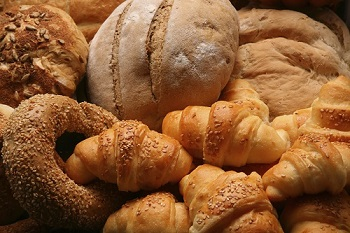

I've been baking since I was ten years old. My mom was never a baker, she still isn't, so I decided to take matters into my own hands. I started out making brownies from the box (like a peasant), then I started using recipes. Surprisingly enough, I didn't burn the kitchen down.
What I bake more often is savory things, like bread and pastry. Even though it's a lot of work, I really enjoy making my own bread. I can add whatever I want to it instead of settling with what's in the store. My favorite kind of bread to make is pesto rolls, pictured below.

Even though sweet things are one of my favorite things to bake, I don't do them as often. My mom usually doesn't let me very often because it requires more ingredients and it's also not very good for you. I used to make my very own apple pie a couple of years ago, which was one of my favorite things I've baked. I even had the recipe memorized, but eventually my family got tired of the same apple pie.
I used to bake a lot of brownies, but then I started broadening my horizons to cupcakes and cookies. My favorite cookies to bake are chocolate chip and sugar cookies. I never really tried anything too crazy with cupcakes, so I always stuck with chocolate or vanilla. I made some with mascarpone cream frosting and it was really good.
By: Valentina H.